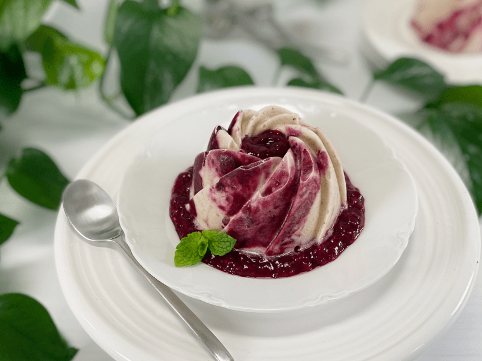

Mini Cherry Rhubarb Banana Frozen Bundt Cakes | Sophisticated | Sugar-Free
Today’s recipe is a play off of my Cherry Rhubarb Banana Ice Cream Push Pops | Sugar-Free. In fact, the formula is the same; the only difference is presentation. I decided to create a new posting since some of you might be here looking for a fancy dessert that you can serve to friends and family. If you saw this presented only as popsicles, you might have kept on scrolling. It appears my tactic worked, because here you are… reading this.

Now, I know what you’re thinking…”Amie Sue, I don’t have a mold like the one you used.” That’s quite all right. You can use any shape or mold you have, providing it is a silicone mold. If you use a metal or ridged mold, you won’t be able to pop them out. However, you could use a muffin tray with liners. The liners would leave a decorative pattern on the edges, giving a more sophisticated look. I also made this recipe in push-pop molds, which you can find (here).
If you don’t have any molds (including popsicle molds) or maybe you don’t have time to wait for it to freeze… make the sauce, make the banana ice cream, and serve it up pronto as you would do with regular ice cream and sauce.
Make Every Bite Count
- There are numerous ways to combat stress, but since this is a recipe site, I tend to focus on how we can load our bodies with delicious and nutritious foods. Food needs to look beautiful and taste amazing… otherwise, we won’t eat it. And if we don’t eat, our bodies can’t get the nutrients it is begging for. Are you digging what I am saying?
- We can transform simple ingredients into works of art…there is NO suffering allowed when trying to eat healthfully. We can engage all of our senses to get a full-on satisfying experience.
I know that times are tough as we weave our way through this pandemic (COVID-19) and if at all possible, I ask you to dig deep to find a silver lining in it all. Every day when you wake up, find one small thing to be grateful for…soon those small things will come together as one collective positive shift in your life. Start by being thankful for the foods you have in your home, even if they aren’t exactly what you want, desire, or crave. Don’t let food boredom set in. Try to find some creativity in how you present it. Trust me; it shifts a person’s mindset. Sending you love and blessings, amie sue
 Ingredients
Ingredients
Yields 2 cups
- 2 cups rhubarb, diced
- 1 cup organic cherries, pitted
- 1 Tbsp chia seeds
- 1/4 tsp sea salt
- Sweetener to taste
- 4 cups diced frozen banana slices
Preparation
Cherry Rhubarb Sauce
-
In a medium saucepan, combine the rhubarb, cherries, and salt. Cover, let cook down, and bring to a gentle simmer over low-medium heat, stirring frequently.
- Once the two have cooked down, taste test (careful–it will be hot) and see if you want to add any sweetener. If so, now is the time.
- Adding salt to the base will help round out the sweet and sour flavors.
- A long, slow simmer drives the moisture out of the fruit, helping to preserve and thicken it at the same time.
- If the mixture starts sticking to the base of the pan, the temperature is too high; reduce it.
-
Once both fruits are soft, it’s time to blend into a thick sauce. Add the hot mixture to the blender with the chia seeds and stevia (or sweetener of choice).
- Make sure it has cooled down completely before adding it to the banana ice cream. Otherwise, you will have a soupy mess on your hands.
Banana Ice Cream
- Start with RIPE bananas–these will yield a sweeter flavor to the ice cream. If they aren’t ripe enough, the bananas will have an astringent flavor. So, use bananas that have spotted skins.
- Peel the bananas and slice them into coin shapes (this makes it easier for your food processor to break them down). Place them in a single layer on a baking pan that fits in the freezer.
- Freeze until frozen hard. If you froze more than 4 cups, place the extra frozen coin shapes in a freezer-safe container and pop back in the freezer for another time.
- To make the ice cream, simply put 4 cups of sliced frozen bananas in the food processor fitted with the “S” blade. Process until it turns thick and CREAMY. Stop the machine occasionally to scrape down the sides. That’s it. No other ingredient needs to be added.
- See the photos below on how the texture changes throughout the blending process. It’s magic.
Assembly
- Have the dessert molds ready.
- Place the banana ice cream into a bowl and pour the sauce next to it. GENTLY fold the two together, which will help create more of a swirl effect to your frozen treat.
- Fill the molds, working out any air bubbles as you do.
- To elevate the presentation, place a scoop of sauce on the plate and set your dessert directly over it.
- Place in the freezer and enjoy them once frozen. They should keep about 3 months in the freezer, but make sure they are well-sealed, so they don’t get freezer-burnt.
© AmieSue.com